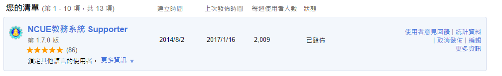

本次更新內容： 版本2.0.0(2017/03/06)
-
新增 課程評論系統!!!!
- 更名 NCUE Plus
套件特色：
- 解鎖IE限制
- 自動填入圖形驗證碼
- 「已讀」系統首頁的彈跳公告
- 修復選課操作系統
- 修復課表下載按鈕
- 可一鍵全選教學意見反應問卷選項
若有疑問、Bug、系統建議，歡迎通知，也歡迎大家幫忙評分XD
祝我四上 All Pass!!!!! ㄎㄅ 我線性代數又被當了(3/6更新) 然後我交大研究所上了~喔耶~ 然後這段期間大概就是最後幾次更新了， 畢竟連我都要畢業了， 感謝各位這兩年半來的使用， 因為有你們的支持， 我才能把這個作品放進推甄資料裡面ㄏㄏXD。 然後，據說教務系統在今年or明年就會徹底改頭換面， 徹底支援 Chrome、Firefox 等主流瀏覽器， 最後祝各位在彰師有個美好的四年XD

附上截至目前的使用狀況